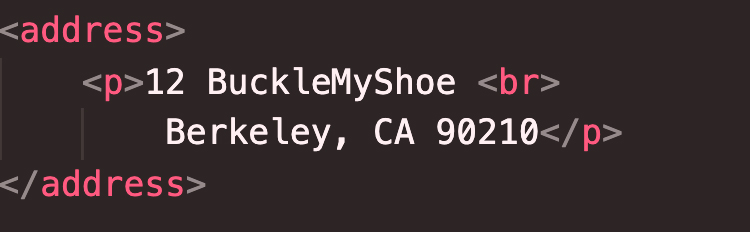

...continued
If we take a deeper dive into the documentation of HTML, found on the MDN Website, we will find that HTML extends to great depths below the surface of just merely structure. HTML has in many ways, served as an advocate, a conduit for information with those who may otherwise not have access to it, for example, visually impaired or disabled individuals. Here is a brief snippet from the webpage, addressing this issue specifically:
"Note: Colorblind people represent around 4% of the world population or, to put it another way, approximately 1 in every 12 men and 1 in every 200 women are colorblind. Blind and visually impaired people represent roughly 4-5% of the world population (in 2012 there were 285 million such people in the world, while the total population was around 7 billion).
In your HTML code, you can mark up sections of content based on their functionality — you can use elements that represent the sections of content described above unambiguously, and assistive technologies like screenreaders can recognise those elements and help with tasks like "find the main navigation", or "find the main content." As we mentioned earlier in the course, there are a number of consequences of not using the right element structure and semantics for the right job. To implement such semantic mark up, HTML provides dedicated tags that you can use to represent such sections, for example:
Another interesting tidbit about HTML is that there is code specific to marking up addresses. One way that we can demonstrate this is by the photograph below...
The address tag is something that we cal use for a more complex markup, being used for any setting, any industry. To give us more of a professional structure, its something we are going to want to consider making use of.
The third final tidbit is for all science buffs out there, all
mathmeticians watching, wondering how on earth do we get the
numbers we are trying to display with the correct placement of the
2 above the upper right hand corner of our letter or number.
Example: 2
Subscripts and Supserscripts is how!
A superscript allow characters to be placed above the
corresponding character, like squared, cubed, to the nth
power....etc. The subscript is allows for characters to be placed
beneath the corresponding characters, for example,
H
I hope these little tidbits brought some awareness to other functions of HTML besides the standard paragraph tags and headers and body tags.
- Cory Risch-Smith